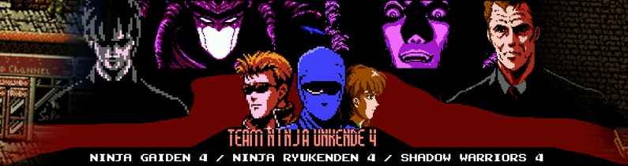
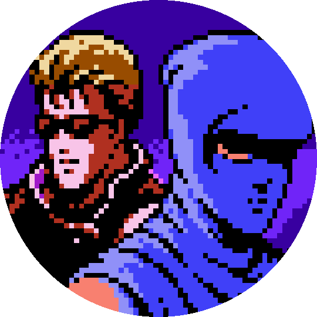
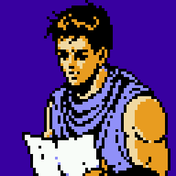
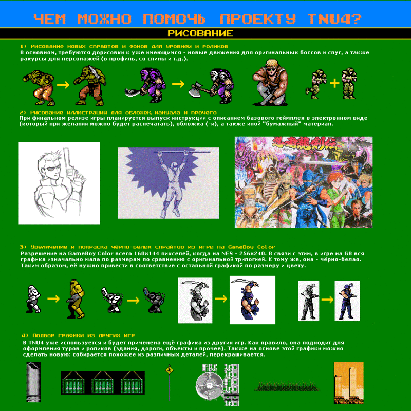

Team Ninja Unkende 4Фанатское сюжетное продолжение NES-трилогии Ninja Gaiden (Famicom / Dendy) для ПК. Известно также как Ninja Gaiden 4, Ninja Ryukenden 4 и Shadow Warriors 4.
Важно: с 19–20 июня 2024 года игра разрабатывается заново на GameMaker Studio 2.

Team Ninja Unkende 4 (TNU4) — фанатское сюжетное продолжение NES-трилогии Ninja Gaiden. Технически и визуально это левелхак (прежние уровни с изменёнными картами и новой расстановкой врагов и предметов) с большим количеством нового контента: уровнями, боссами и геймплейными элементами. В основе — механика и геймплей всей трилогии, с предпочтением правил третьей части как наиболее продвинутой.
«Ункенде» — имя главного героя проекта, Рю Хаябусы. Название «Team Ninja Unkende» выдуманное: откуда оно взялось и почему сохранилось, рассказывается в видеоподкасте (01:17) и (04:40).
Проект фанатский и некоммерческий.
Продолжение истории оригинала с катсценами между уровнями.
Изменённые прежние уровни (действие проходит и в знакомых, и в новых местах), а также уровни из новой графики и ресурсов других игр.
Враги с обновлённым поведением из всей трилогии и других игр франшизы.
Большая часть знакомых айтемов и новые, в том числе оружие.
Усложнённые прежние боссы с новой графикой и несколько новых.
Роберт: играбельный, со своими спрайтами, характеристиками и атаками. За него проходятся определённые уровни. Мультиплеера нет.
Физика и условности близки к оригиналу. Есть меню, настройки, расширенный Game Over, секреты и отсылки.
Windows в приоритете, версия для Linux вероятна. Другие платформы пока не планируются.
Основная механика «слуг»: реакция на атаки игрока, «подстава» (временный объект на месте врага), взрывы трёх вариантов по мотивам трилогии, заморозка песочными часами.
Несколько типов айтемов, в том числе случайные и «закрытые» (меняются на менее ценный бонус при перезапуске комнаты), GB Item с контролируемым респавном бонусов, двойник из Ninja Gaiden 2.
Малый сюрикен, огненные кольца вверх по диагонали, неуязвимость (трёхсекундная защита, сальто с мечом), самонаводящиеся пули со взрывами. Ниндзя-бомба в работе.
Свои спрайты и механизм атак, зависящих от положения (стойка, сидя, прыжок, захват трубы), маски атак, выстрел из пистолета на стене.
Полный список эфиров, включая разработку TNU4, есть на странице «Статистика по стримам».
Во втором видеоподкасте подробно рассказано о проекте и разобраны частые вопросы. Он записан давно, когда игра ещё делалась на GameMaker 7, поэтому часть сказанного может отличаться от нынешнего положения дел.
Проект некоммерческий и нуждается в помощи с графикой. Подробности — в закреплённом сообщении темы на Emu-Land.
Дорисовка к имеющимся: новые движения боссов и врагов, ракурсы персонажей в сюжетных сценах (в профиль, со спины и т.д.).
Обложки, мануал и прочие материалы к финальному релизу.
Увеличение и покраска чёрно-белых спрайтов, чтобы привести их к размеру и цветам остальной графики.
Подбор подходящих ресурсов для оформления уровней и сцен: зданий, дорог, объектов.

Все релизные версии игры, от старых до новейших, можно скачать на сайтах itch.io и GameJolt.